一.噪声源类型
（1）Cross Talk：串扰
产生：电容耦合产生（$mV$级别）
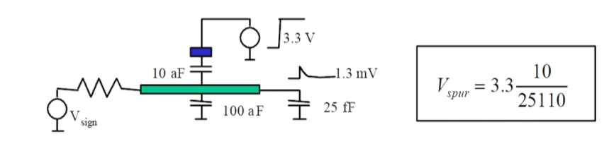
（2）Near-Field：近场电磁干扰
产生：信号在Metal线中高频信号产生电磁场，并在另一个Metal线中感应处电磁信号
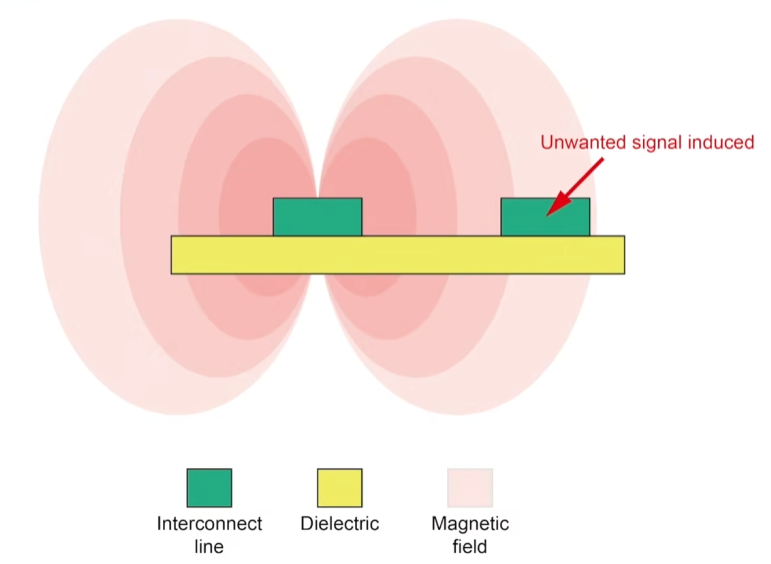
（3）衬底噪声
产生：噪声通过衬底（$IR-drop$使得衬底电压不为$0$）耦合过去，也有可能耦合到Metal线上（通过电容）
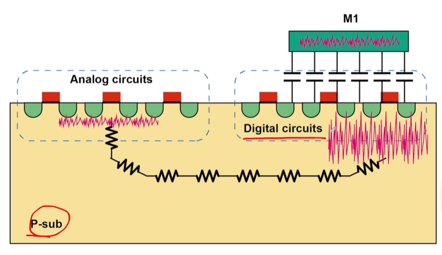
二.解决方法
（1）同轴线屏蔽
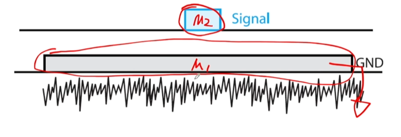
（2）电磁串扰屏蔽
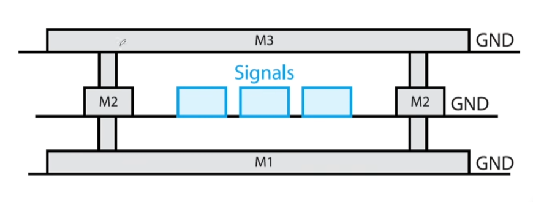
（3）如果信号线就是$M1$：N阱屏蔽
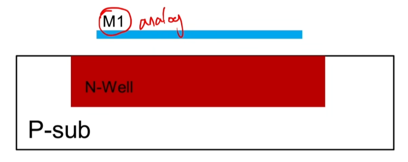
★（4）Guard-Ring（衬底噪声）
· 噪声被$P+$相连的$GND$吸收，或者被反向偏置的$PN$结弹回；
→种类：
1.PGR
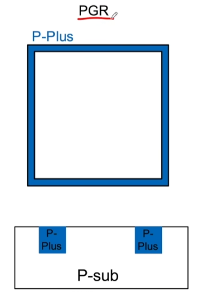
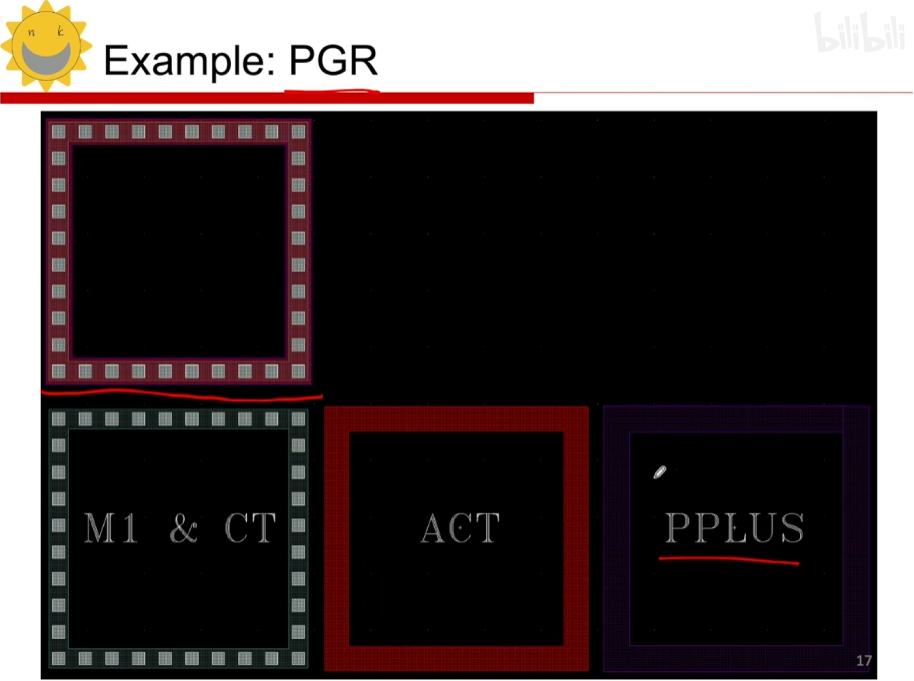
2.PGR-NGR-PGR：两个PGR不能共地防止NGR被短路
原理：两个PGR能吸收两次衬底噪声，而PGR与NGR构成高阻PN结，回弹噪声！
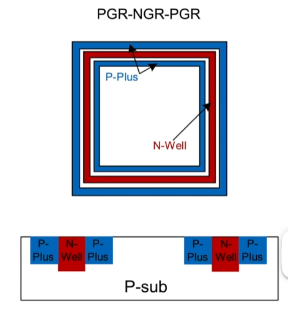
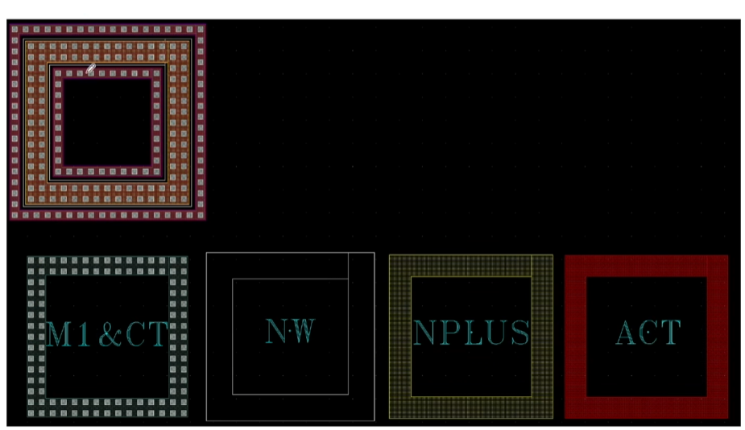
3.PGR-Deep Nwell-PGR（阻止衬底噪声深层传播）
缺点：DNW占地面积特别大，而且DNW需要与NWELL有一定交叠
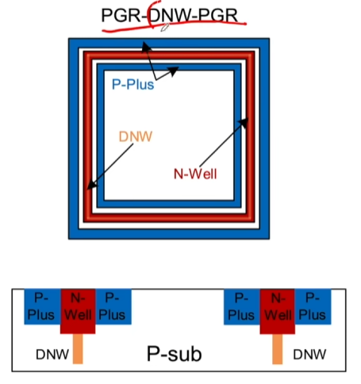
4.PGR-DNW-PGR(Covered By DNW)
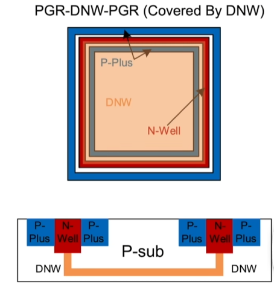
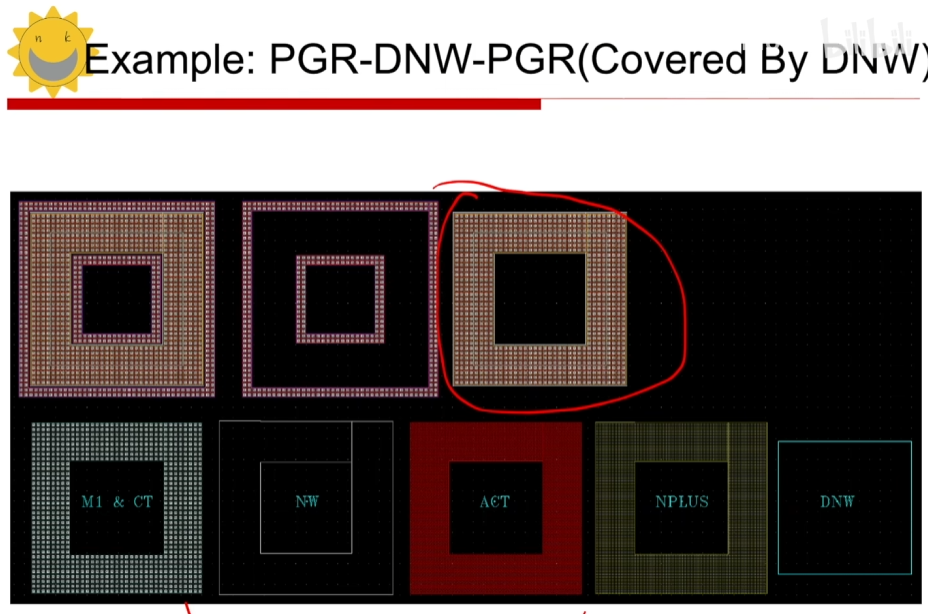
（5）Decoupled Power Rails
· 通过导线间的寄生电容作为滤波电容，过滤电源与地中的高频串扰
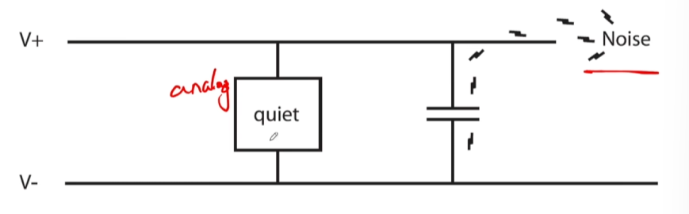
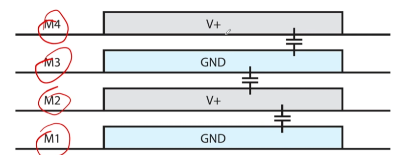
（6）密勒效应的解决：
· 防止Gate处的寄生电容过大，应该让Gate与Drain之间连线的重合度更小一点。
如下图，我们倾向于用$A$作为Drain！
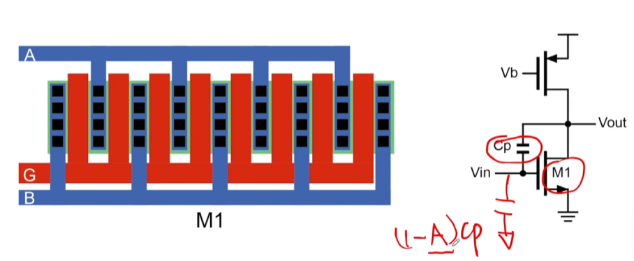